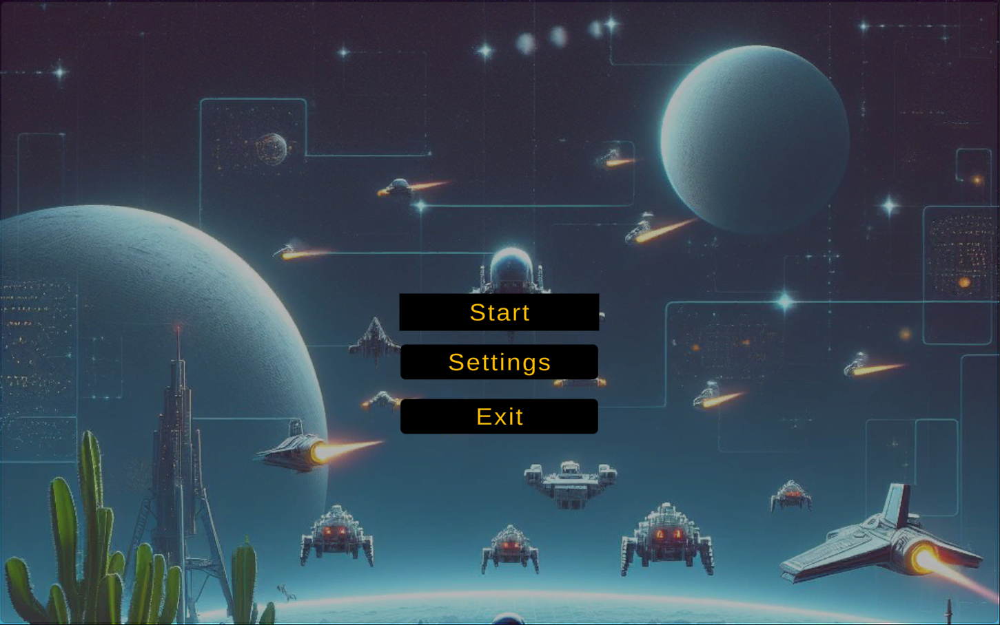
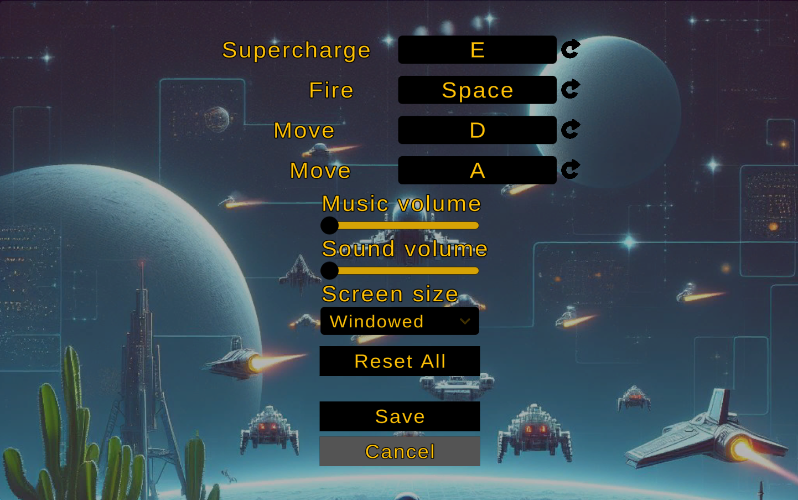

Space Invaders
Technical details
Engine: Unity
Version: 2020.3.16f1
Genre: Fixed shooter
Assets: Free from Unity Marketplace & DALL-E
Description
This is simple version of Space Invaders where you play vs meteorites to get the high score. If they hit you you lose. Here I wanted to test how the game settings might work, so even if the game itself is not advanced, the settings were much more advanced in this case. The game was created fully by me as a programmer with help of DALL-E and free assets. To manage input from the player I have used newInputSystem to get familiar with it.
Settings
Below are shown settings that are in the game. Rebinding of actions, screeen size that allows the player to change between Window, Borderless and Fullscreen options, reseting all to default binding and saving it, so on the next game start the player can use their prefered options.
Now I will jump straight to the code. First we have ScreenSize function. It is pretty simple as Unity provides simple ways of achieving this change.
public void ScreenSize()
{
Debug.Log("[ScreenSize] Screen size: " + screenModeDropdown.options[screenModeDropdown.value].text);
string selectedOptionText = screenModeDropdown.options[screenModeDropdown.value].text;
ScreenMode mode = (ScreenMode)System.Enum.Parse(typeof(ScreenMode), selectedOptionText);
switch (mode)
{
case ScreenMode.Fullscreen:
Screen.fullScreenMode = FullScreenMode.ExclusiveFullScreen;
break;
case ScreenMode.Windowed:
Screen.fullScreenMode = FullScreenMode.Windowed;
break;
case ScreenMode.Borderless:
Screen.fullScreenMode = FullScreenMode.FullScreenWindow;
break;
}
}Second part is SaveSettings. Where we need to save PlayerPrefs to be able to use them later on another game run.
public void SaveSettings()
{
PlayerPrefs.Save();
settingsPanel.SetActive(false);
mainMenuPanel.SetActive(true);
}New Input System
Here we have two actions, movement and attack, as they are added to this system. To set them up, we need to combine PlayerInput with InputActions. Then there are two variables MoveAxisValue and FireInput that can be used in other scripts to handle the logic of attack and movement. This is UserInput script which only handles the player input.
public float MoveAxisValue { get; private set; }
public bool FireInput { get; private set; }
private PlayerInput _playerInput;
private InputAction _moveAction;
private InputAction _fireAction;
private void Awake() {
if (instance == null)
{
instance = this;
}
_playerInput = GetComponent();
SetupInputActions();
}
private void Update()
{
UpdateInputs();
}
private void SetupInputActions()
{
_moveAction = _playerInput.actions["Move"];
_fireAction = _playerInput.actions["Fire"];
}
private void UpdateInputs()
{
MoveAxisValue = _moveAction.ReadValue();
FireInput = _fireAction.IsPressed();
}
Rebinding
To operate on rebindings we modify Unity Sample Rebinding UI project with some modifications. First we exclude mouse while waiting for keypress, so there will bo no action on the mouse. Then we add ESC as the cancelation button.
m_RebindOperation = action.PerformInteractiveRebinding(bindingIndex)
.WithControlsExcluding("") // this excludes mouse
.WithCancelingThrough("/escape") // this canceles rebindings
.OnCancel( We start with single reset of the binding to default. This functionality is connected to the button of specific action. We first get the InputBinding and what was the oldPath and then find this action in the map of actions, so we can proceed with reseting. It is important to take into account the composite and normal bindigns here. If the binding is composite we have to run the loop for other parts of this action. Code for this is shown below.
private void ResetBinding(InputAction action, int bindingIndex)
{
InputBinding newBinding = action.bindings[bindingIndex];
string oldOverridePath = newBinding.overridePath;
action.RemoveBindingOverride(bindingIndex);
int currentIndex = -1;
foreach (InputAction otherAction in action.actionMap.actions)
{
currentIndex++;
InputBinding currentBinding = action.actionMap.bindings[currentIndex];
if (otherAction == action)
{
if (newBinding.isPartOfComposite)
{
if (currentBinding.overridePath == newBinding.path)
{
otherAction.ApplyBindingOverride(currentIndex, oldOverridePath);
}
}
else
{
continue;
}
}
for (int i = 0; i < otherAction.bindings.Count; i++)
{
InputBinding binding = otherAction.bindings[i];
if (binding.overridePath == newBinding.path)
{
otherAction.ApplyBindingOverride(i, oldOverridePath);
}
}
}
}To avoid assigning one key to few actions we need to verify whether they are any duplicates. The first function is created exactly for this purpose. We get the action, we get the bindingIndex and check whether this key is already assigned to the other action. There are two cases: first is just normal key binding and the second one is composite. The second option is more complicated, because if we find that it is already assigned, we have to check where it is assigned, so we need to loop threw the composite to find it. Then we return the bool signaling whether there are duplicated for it or not. Code for this is below.
private bool CheckDuplicateBindings(InputAction action, int bindingIndex, bool allCompositeParts = false)
{
InputBinding newBinding = action.bindings[bindingIndex];
int currentIndex = -1;
foreach (InputBinding binding in action.actionMap.bindings)
{
currentIndex++;
if (binding.action == newBinding.action)
{
if (binding.isPartOfComposite && currentIndex != bindingIndex)
{
if (binding.effectivePath == newBinding.effectivePath)
{
Debug.Log("[CheckDuplicateBindings] Duplicate binding found in composite: " + newBinding.effectivePath);
return true;
}
}
else
{
continue;
}
}
if (binding.effectivePath == newBinding.effectivePath)
{
Debug.Log("[CheckDuplicateBindings] Duplicate binding found: " + newBinding.effectivePath);
return true;
}
}
if (allCompositeParts)
{
for (int i = 1; i < bindingIndex; i++)
{
if (action.bindings[i].effectivePath == newBinding.overridePath)
{
Debug.Log("[CheckDuplicateBindings] Duplicate binding found: " + newBinding.effectivePath);
return true;
}
}
}
return false;
}Then there is a main function called PerformInteractiveRebind where we use the above code. Here you can see the part that was changed, first we need to add variable to save the oldBinding of the action, and to be able to change the actions data it has to be disabled. Then when the operation completes, it is necessary to verify whether the new binding is already assigned somewhere else, if it is, the current action gets the binding and leaves its old binding for the other action. Making it this way, there is no way to leave the actions without bindings, which is really important in this game. Code is shown below.
private void PerformInteractiveRebind(InputAction action, int bindingIndex, bool allCompositeParts = false)
{
{...}
InputBinding oldBinding = action.bindings[bindingIndex];
// disable action before use to prevent the error
action.Disable();
// Configure the rebind.
m_RebindOperation = action.PerformInteractiveRebinding(bindingIndex)
.WithControlsExcluding("")
.WithCancelingThrough("/escape")
.OnCancel(
{...}
.OnComplete(
operation =>
{
action.Enable();
m_RebindOverlay?.SetActive(false);
m_RebindStopEvent?.Invoke(this, operation);
// Check for duplicates in binding
if (CheckDuplicateBindings(action, bindingIndex, allCompositeParts))
{
// oldBinding.effectivePath
action.RemoveBindingOverride(bindingIndex);
// bind it back
action.ApplyBindingOverride(bindingIndex, oldBinding.effectivePath);
CleanUp();
PerformInteractiveRebind(action, bindingIndex, allCompositeParts);
return;
}
UpdateBindingDisplay();
CleanUp();
{...}
});
{...}
} Key takeouts
It was my first taste of the more advanced way of creating settings, where you can change bindings or adjust the screen size. As the settings are one of the most important parts of the game, where the player can adjust the game to his preferences, it was a good learning point. Another thing was the NewInputSystem, which in my opinion is poorly described compared to the old one, was really interesting to work with. Now I also learned how important it is to be able to extend the existing projects or adapt them to our needs, which was done with a somewhat buggy RebindingUI Unity project.